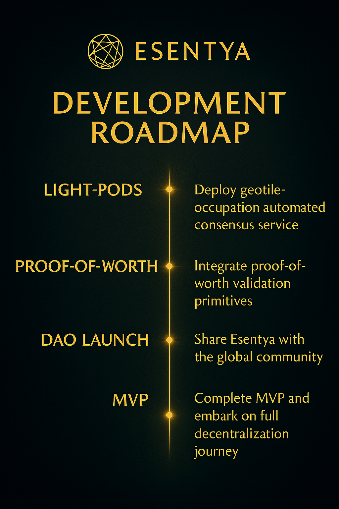
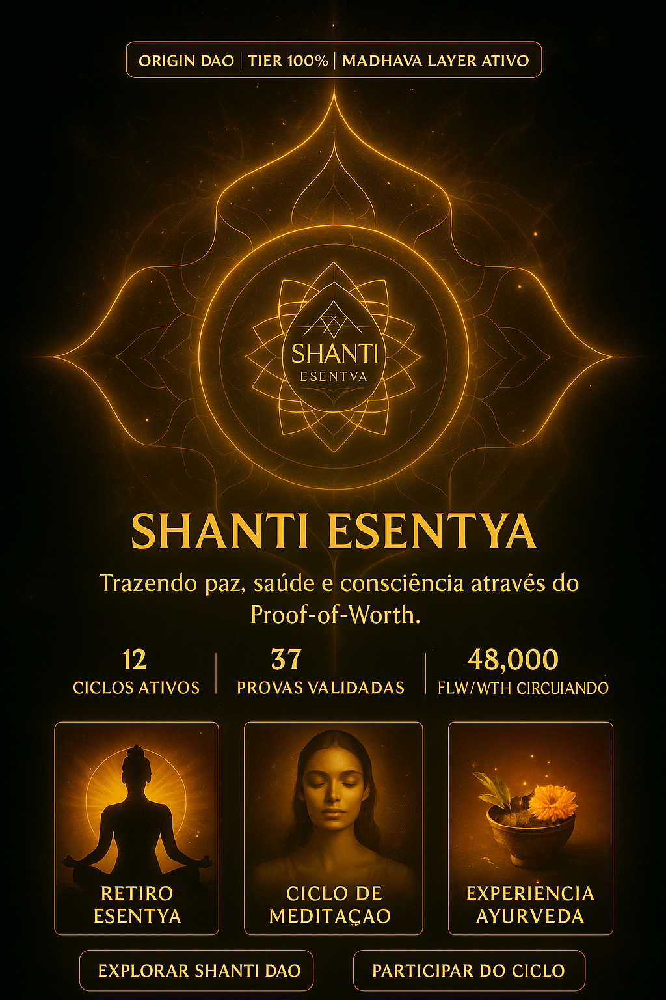
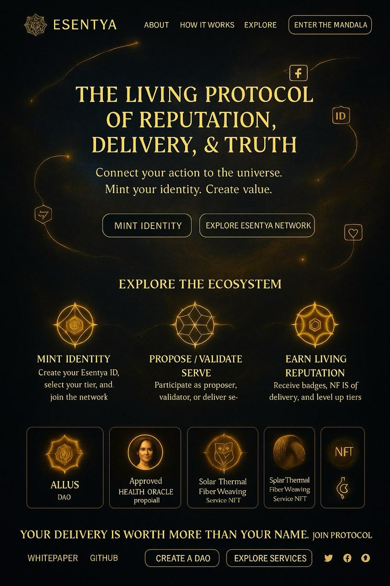

Identity, Worth & Dharma for a Regenerative Web3
📜 Read the WhitepaperToda evolução segue um ciclo simbólico: Dream → Plan → Execute → Validate → Mint. O roadmap do D. Esentya é vivo — com fases que refletem nossa maturação técnica, espiritual e comunitária.
Estamos atualmente na Fase 1: Identidade & Linhagem. Ainda em estágio inicial, o token $D.Flow já está lançado, e as fundações estão sendo ativadas com presença real, estudo e offering.
Cada DAO em Esentya nasce como um Pod vivo, guiado por Dharma e alinhado com propósito. Não é sobre hype — é sobre legado simbólico, regeneração local e coordenação ética.
As regras não são arbitrárias: nossos contratos DAO-DAO respeitam princípios como não-violência, justiça local, e presença comprovada. Em breve, qualquer identidade ORIGIn poderá gerar um novo Pod sagrado.
A interface do Esentya nasce com beleza e função. Aqui você verá sua identidade, ofertas de serviço, validações RedPill, DAO Pods ao redor do mundo, e a jornada de worth que você manifesta.
Algumas funções estão em desenvolvimento (como staking, Proof-of-Worth, e tokens DAO), mas a base já pulsa. Estamos preparando uma stack viva, acessível via celulares e realidades locais.